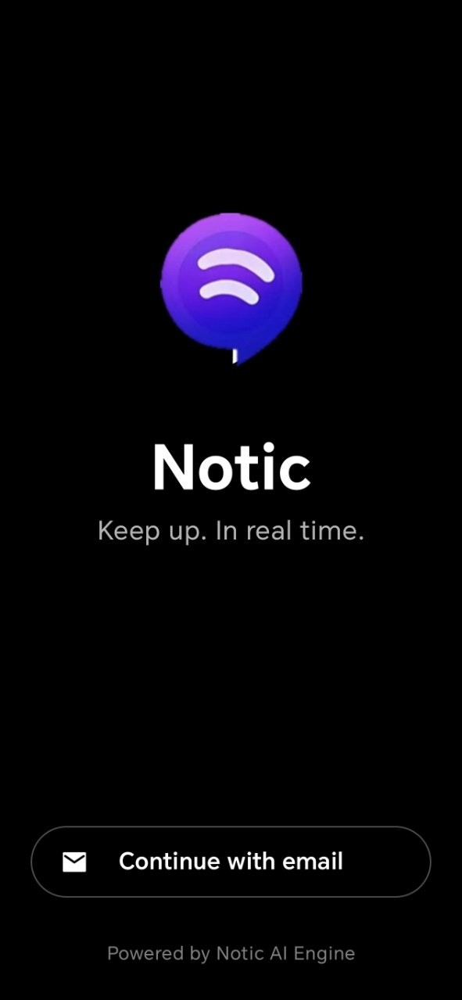
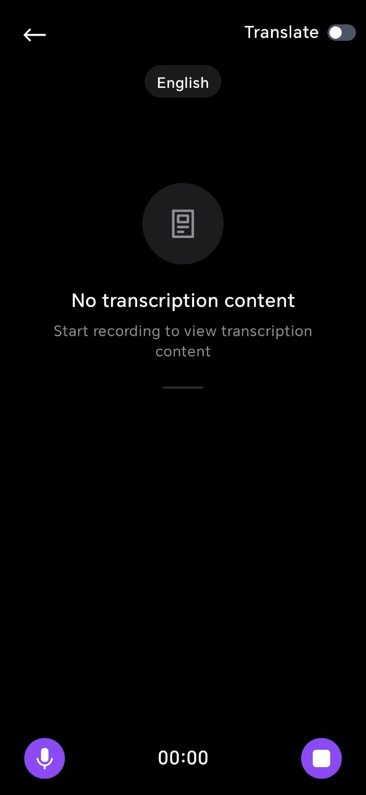

一款课堂转录 App 为什么要同时磨远场收音、混合语言和术语精度
Notic 从 15 米远场收音到实时双语对照、从医学术语识别到课后总结三视图，背后是一套以「学习信息提取」为核心的产品设计逻辑。
开头：为什么一款录音 App 要做这么多
我一开始接触 Notic，是被它在 App Store 里那串宣传语吸引的——15 米远场收音、50+ 语言实时翻译、说话人分离、专业术语识别。这些卖点单独拎出来，每一个都能当一款 App 的主打的；下载装上之后堆在一起用，第一反应是"这玩意是个大杂烩吧"。
但去官网仔细看了看它的功能列表，再用了几周之后，我发现它的设计逻辑其实很统一，而且藏着一个多数录音转写 App 都没碰过的问题：课堂上真正有用的不是"把声音变成文字"，而是"把课堂里的有效信息从噪音里捞出来"。
普通录音 App 的目标很直白——尽量把原始声音录清楚，转写工具再把它尽量准确地变成文字。这两件事，Notic 都在做，但它还在中间插了好几层：远场收音的声学优化、混合语言的上下文判定、专业术语的领域词典、说话人的身份标签。这些看起来是"额外功能"，其实每一层都是在回答一个更根本的问题：学生坐在大教室后排，手机离讲台十几米，周围有空调声、翻书声、邻座小声议论——怎么才能让最终呈现给他的东西，真的是教授在讲什么，而不是一堆乱糟糟的字符？
拆解一：远场收音不是简单的"放大声音"
先从最直观的 15 米远场收音说起。普通手机录音在安静的房间里表现不错，但教室是另一个世界：大阶梯教室的混响、空调出风口的持续低频噪声、讲台和学生之间十几米的距离差，这些叠加起来，手机麦克风收到的信号里有用的人声可能还不到 30%。
Notic 的做法不是简单提高增益（那样只会把噪声一起放大），而是针对课堂这个特定场景做了两层优化：第一层是声学过滤——它知道教室里哪些频率的噪声是"背景"（比如空调的低频嗡鸣），直接切掉，把保留的频段留给人声；第二层是方向判定——用户把手机朝向讲台放置时，算法会优先放大那个方向的声音，抑制其他方向的干扰。
我在学校大阶梯教室实测过一次：坐在倒数第三排（大概离讲台 14 米左右），手机放桌面朝前对准讲台，整节课录完转写出来，教授的声音基本没断，偶尔有几句后排同学的闲聊被混进去但不影响理解。同位置用手机自带的录音，转写出来大概有三分之一的内容是空调噪声和断断续续的语音片段。

这背后的取舍也很清楚：远场效果强依赖环境。如果教室本身声学条件差（比如有大片光滑墙面导致混响严重），或者手机被放在书包里被外套挡住，15 米这个官方口径就打折扣了。Notic 自己也没回避这一点——翻了一下Notic文档才看到，里面明确说"远场效果与教室声学环境强相关，15 米为官方宣传口径，实际以自己的教室实测为准"。
拆解二：混合语言和术语精度，其实是在解决同一个问题
Notic 支持 50+ 语言还有粤语，还能做混合语言识别——比如教授一段英文一段中文混着讲，它能自动切换。这听起来很复杂，但背后的核心思路反而是简化模型输入。
我试着理解过它的实现逻辑：混合语言识别的难点不在于"识别每种语言"，而在于"什么时候该切语言"。如果只靠音频特征（比如不同语言的语音频率分布）来判断，边界附近容易出错。Notic 可能在两层上做了文章：第一层是上下文预判——它知道你选的是中英混合模式，所以会在"可能出现英语术语"的位置提前切换；第二层是术语词典——比如医学领域里"Equilibrium"这个词，它在上下文里大概率是"均衡"而不是其他意思，直接按专业领域的词典去匹配，既提升了准确率又加快了速度。
这就引出了它另一个被官方反复提的点：专业术语识别，"尤其擅长医学领域"。普通转写工具碰到生僻词会按发音近似匹配，结果往往是一堆同音字瞎猜。Notic 给我的体验是，它在医学、生物工程这类术语密集的课上，准确率明显高于我之前用过的几款工具——有一节生物课讲 "supervised learning" 和 "genetic algorithm"，转写结果里这两个术语都是一次就对了，没有被拆成乱七八糟的中文。

但这里也有代价：术语覆盖范围是有限的。官方没给出完整的学科清单，我试过一节建筑学的课，一些比较偏的结构力学名词还是被转错了。它擅长的是有比较成熟行业术语体系的领域（医学、工程、经济），如果是新兴交叉学科或者比较冷门的方向，效果就一般。
拆解三：三视图设计——为什么课后总结要拆成 Original / Bilingual / Summary
一节课录完，逐字稿可能有几万字，学生真正需要的往往是"这节课讲了什么重点"。Notic 没有把总结当逐字稿的附属品，而是直接在笔记页顶部放了三个并列的视图：Original（纯原文带时间戳和说话人标签）、Bilingual（原文加中文译文逐句对照）、Summary（AI 生成的结构化总结）。
这个设计的聪明之处在于，它没有假设"学生只需要总结"或者"学生只需要原文"。不同场景下的需求是不一样的：
- 写作业引用原话，需要切到 Original 视图找精确的时间戳和原文措辞
- 某段英文没听懂，需要 Bilingual 视图逐句对照翻译
- 课后快速复习，直接看 Summary 里的"核心概念"和"关键术语卡"
这三个视图的数据来源其实是同一份转写结果，但 AI 处理的方式不同：Original 是原始输出加说话人分离的身份标签；Bilingual 是对原文逐句做翻译；Summary 是把转写结果送去一个专门的总结模型，提取层级化的要点和术语。三个视图之间切换是瞬时的，因为转写阶段已经把所有需要的信息都算好了，课后只是不同方式的呈现。
取舍：它什么做得好，什么做得一般
用了这么久，我对 Notic 的判断是：它是课堂场景下最完整的一套方案，但完整不等于全能。
做得好的地方：
- 大课后排的远场收音，这是它最核心的竞争力，我测过几款竞品在同样位置的表现，Notic 至少好一个档次
- 混合语言+专业术语的组合，适合留学生或双语授课环境，医学和经济类课程体验最佳
- 课后总结三视图的设计思路正确，比那种"要么给原文要么给摘要"的单一路径灵活得多
做得一般甚至不行的地方：
- 安静的小教室场景，远场优化反而可能帮倒忙，算法会去"找"不存在的背景噪声来过滤
- 非学习用途（比如会议纪要），它的产品设计明显是围绕学生需求来的，对上班族来说有些功能用不上
- 总结份数有限额，体验包只给 15 份，用完就要升级套餐或者等免费时长奖励，对每节课都生成总结的重度用户来说成本不低
- 新兴学科或冷门领域的术语覆盖还在补，我试过一节计算神经科学的课，有些新兴名词识别率明显下降
最后：它适合谁
如果你坐在大阶梯教室的后排，手机离讲台有十几米，教授可能中英混讲，偶尔蹦出几个你听不懂的专业词——Notic 就是为你做的。它不是在"录音"这件事上做到极致，而是在"从课堂里帮你把有用的东西捞出来"这件事上想得比别人远。
换个角度说，如果你的课堂环境安静、语言单一、术语简单，那一个便宜的录音 App 加一个免费的转写工具组合起来可能就够了。Notic 的价值，恰恰在于那些"普通方案对付不了"的复杂场景。